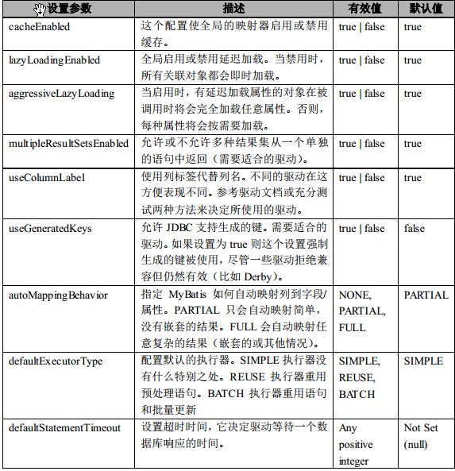
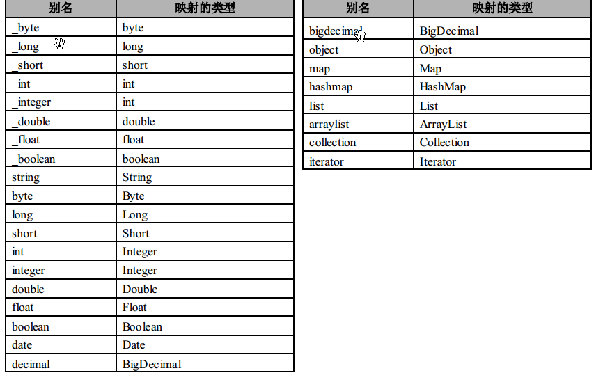
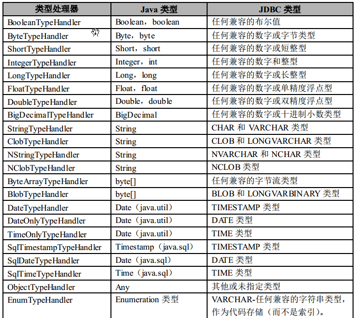

基本使用
-
引入jar文件，jdbc的jar和mybatis的jar，如果需要使用mybatis的高级功能可以再添加相关的依赖
-
根据全局配置文件创建一个SqlSessionFactory对象
-
sql映射文件；配置了每一个sql，以及sql的规则封装等
-
将sql映射文件注册中在全局配置中
-
代码编写/接口和非接口两种使用方式
<?xml version="1.0" encoding="UTF-8" ?>
<!DOCTYPE configuration PUBLIC "-//mybatis.org//DTD Config 3.0//EN" "http://mybatis.org/dtd/mybatis-3-config.dtd">
<configuration>
<environments default="development">
<environment id="development">
<transactionManager type="JDBC" />
<dataSource type="POOLED">
<property name="driver" value="com.mysql.jdbc.Driver" />
<property name="url"
value="jdbc:mysql://127.0.0.1:3306/mm?characterEncoding=utf-8" />
<property name="username" value="tmaize" />
<property name="password" value="123456" />
</dataSource>
</environment>
</environments>
<mappers>
<mapper resource="User.xml" />
</mappers>
</configuration>
非接口式编写
<!-- 命名空间，为sql语句划定范围，同时减少输入，在接口式编写中用于指定mapper位置 -->
<mapper namespace="namespace1">
<select id="findUserById" parameterType="int" resultMap="userResultMap">
SELECT * FROM user WHERE id = #{id}
</select>
</mapper>
Reader reader = Resources.getResourceAsReader("SqlMapConfig.xml");
SqlSessionFactory sqlMapper = new SqlSessionFactoryBuilder().build(reader);
try{
//sqlSession非线程安全，最好在方法体内定义，传入false可以设置为非自动提交
SqlSession sqlSession = sqlMapper.openSession();
// ...事务相关的代码
// sqlSession.commit();
User user = sqlSession.selectOne("namespace1.findUserById", 1);
}catch(){
//回滚
}finally(){
//每次使用结束最好关闭它
sqlSession.close();
}
接口式编写
底层使用代理来实现，MyBatis会为接口自动创建一个代理对象类执行接口里面的方法，好处在于能够规范传递的参数类型
同时namespace和Mapper的全类名对应，id和方法名对应
UserMapper.xml,在主配置文件中加入UserMapper.xml
<?xml version="1.0" encoding="UTF-8" ?>
<!DOCTYPE mapper PUBLIC "-//mybatis.org//DTD Mapper 3.0//EN" "http://mybatis.org/dtd/mybatis-3-mapper.dtd">
<!-- 动态代理时namespace不能乱取名字了，要指定mapper -->
<mapper namespace="dao.UserDao">
<select id="findUserById" parameterType="int" resultType="entity.User">
SELECT * FROM user WHERE id = #{id}
</select>
</mapper>
UserDao.java
import entity.User;
public interface UserDao {
//方法名和UserMapper.xml中语句的id一样
public User findUserById(int id);
}
测试
//动态代理关键在于不用写dao实现了
UserDao userDao = sqlSession.getMapper(UserDao.class);
User user = userDao.findUserById(1);
System.out.println(user.toString());
注意：sqlSessionFactory.openSession()默认是false,即不自动提交更改，便于事务的回滚，在测试的时候可以sqlSessionFactory.openSession(true)，即自动提交，不需要手动commit
主要类
-
SqlSessionFactoryBuilder
这个类可以被实例化，使用和丢弃。一旦你创建了 SqlSessionFactory 后，这个类就不需要存在了。因此 SqlSessionFactoryBuilder 实例的最佳范围是方法范围（也就是本地方法变量）。
你可以重用 SqlSessionFactoryBuilder 来创建多个 SqlSessionFactory 实例，但是最好的方式是不需要保持它一直存在来保证所有 XML 解析资源，因为还有更重要的事情要做。
-
SqlSessionFactory
一旦被创建， SqlSessionFactory 应该在你的应用执行期间都存在。没有理由来处理或重新创建它。使用 SqlSessionFactory 的最佳实践是在应用运行期间不要重复创建多次。 这样的操作将被视为是非常糟糕的。因此 SqlSessionFactory 的最佳范围是应用范围。有很多方法可以做到，最简单的就是使用单例模式或者静态单例模式。然而这两种方法都不认为是最佳实践。 这样的话，你可以考虑依赖注入容器，比如 Google Guice 或 Spring。这样的框架允许你创建支持程序来管理单例 SqlSessionFactory 的生命周期。
-
SqlSession
每个线程都应该有它自己的 SqlSession 实例。 SqlSession 的实例不能被共享，也是线程不安全的。因此最佳的范围是请求或方法范围。绝对不能将 SqlSession 实例的引用放在一个类的静态字段甚至是实例字段中。也绝不能将 SqlSession 实例的引用放在任何类型的管理范围中，比如 Serlvet 架构中的 HttpSession。如果你现在正用任意的 Web 框架，要考虑 SqlSession放在一个和 HTTP 请求对象相似的范围内。换句话说，基于收到的 HTTP 请求，你可以打开了一个 SqlSession，然后返回响应，就可以关闭它了。 关闭 Session 很重要，你应该确保使用finally 块来关闭它。
配置显示SQL语句
Mybatis内置的日志工厂提供日志功能，需要导入相关的jar包，具体的日志实现有以下几种方式：
-
SLF4J
-
Apache Commons Logging
-
Log4j 2
-
Log4j
-
JDK logging
具体选择哪个日志实现由MyBatis的内置日志工厂确定。它会使用最先找到的（按上文列举的顺序查找）。 如果一个都未找到，日志功能就会被禁用。
不少应用服务器的classpath中已经包含Commons Logging，如Tomcat和WebShpere， 所以MyBatis会把它作为具体的日志实现。
如果使用其他的最好手动指定需要在配置文件中指定使用那种日志工具
<settings>
<setting name="logImpl" value="LOG4J" />
</settings>
接着创建log4j.properties
log4j.rootLogger=DEBUG, Console
#Console
log4j.appender.Console=org.apache.log4j.ConsoleAppender
log4j.appender.Console.layout=org.apache.log4j.PatternLayout
log4j.appender.Console.layout.ConversionPattern=%d [%t] %-5p [%c] - %m%n
log4j.logger.java.sql.ResultSet=INFO
log4j.logger.org.apache=INFO
log4j.logger.java.sql.Connection=DEBUG
log4j.logger.java.sql.Statement=DEBUG
log4j.logger.java.sql.PreparedStatement=DEBUG
全局配置文件
MyBatis 的 XML 配置文件包含了影响 MyBatis 行为甚深的设置和属性信息。 XML 文档的高层级结构如下：
在进行配置时，标签的顺序必须和下面的顺序一致，否则会报错
- configuration 配置
- properties 属性
- settings 设置
- typeAliases 类型命名
- typeHandlers 类型处理器
- objectFactory 对象工厂
- plugins 插件
- environments 环境
- environment 环境变量
- transactionManager 事务管理器
- dataSource 数据源
- environment 环境变量
- mappers sql语句映射文件
properties 引用外部配置
<properties resource="org/mybatis/example/config.properties">
<!-- 覆盖或者重新定义 -->
<property name="username" value="dev_user"/>
</properties>
在配置文件里面可以通过${key}的方式来得到外部properties对应的value
Settings
这些是极其重要的调整，它们会修改 MyBatis 在运行时的行为方式。
<settings>
<setting name="cacheEnabled" value="true"/>
...
</settings>

typeAliases 起别名
类型别名是为 Java 类型命名一个短的名字。它只和 XML 配置有关，只用来减少类完全限定名的多余部分对于普通的Java类型，有许多内建的类型别名。它们都是大小写不敏感的，由于重载的名字，要注意原生类型的特殊处理。

为类自定义别名
<typeAliases>
<typeAlias alias="User" type="net.tmaize.mybatis.entity.User"/>
<!-- 为某个包下面的所有类起别名,默认名是类名小写 -->
<!-- 需要自定义名字可以在类上添加@Alias注解指定 -->
<package name="xx.xx.xx"></package>
</typeAliases>
起了别名后下面两个是等价的
<select id="findUserById" parameterType="int" resultType="net.tmaize.mybatis.entity.User">
<select id="findUserById" parameterType="int" resultType="User">
typeHandlers
无论是 MyBatis 在预处理语句中设置一个参数，还是从结果集中取出一个值时，类型处理器被用来将获取的值以合适的方式转换成 Java 类型。下面这个表格描述了默认的类型处理器。
MyBatis3.4以前的版本需要我们手动注册这些处理器，以后的版本都是自动注册的

最重要的是你可以重写类型处理器或创建你自己的类型处理器来处理不支持的或非标准的类型
//自定义累类型处理器
public class ExampleTypeHandler implements TypeHandler{}
//添加到配置文件中
<typeHandlers>
<typeHandler javaType="String" jdbcType="VARCHAR" handler="xx.ExampleTypeHandler"/>
</typeHandlers>
objectFactory
MyBatis 每次创建结果对象新的实例时，它使用一个 ObjectFactory 实例来完成。如果参数映射存在，默认的 ObjectFactory 不比使用默认构造方法或带参数的构造方法实例化目标类做的工作多。 如果你想重写默认的 ObjectFactory，你可以创建你自己的。
ObjectFactory 接口很简单。它包含两个创建用的方法，一个是处理默认构造方法的，另外一个是处理带参数构造方法的。最终， setProperties 方法可以被用来配置 ObjectFactory。在初始化你的 ObjectFactory 实例后， objectFactory 元素体中定义的属性会被传递给setProperties 方法。
public class ExampleObjectFactory extends DefaultObjectFactory {
public Object create(Class type) {
return super.create(type);
}
public Object create(Class type,List<Class> constructorArgTypes,
List<Object> constructorArgs) {
return super.create(type, constructorArgTypes,constructorArgs);
}
public void setProperties(Properties properties) {
super.setProperties(properties);
}
}
<objectFactory type="org.mybatis.example.ExampleObjectFactory">
<property name="someProperty" value="100"/>
</objectFactory>
plugins
MyBatis 允许你在某一点拦截已映射语句执行的调用。默认情况下， MyBatis 允许使用插件来拦截方法调用
environments 多环境
MyBatis 可以配置多种环境。这会帮助你将 SQL 映射应用于多种数据库之中。例如，你也许为开发要设置不同的配置，测试和生产环境。或者你可能有多种生产级数据库却共享相同的模式，所以你会想对不同数据库使用相同的 SQL 映射。
一个很重要的问题要记得：你可以配置多种环境，但你只能为每个 SqlSessionFactory实例选择一个
每个数据库对应一个 SqlSessionFactory
<environments default=" development">
<environment id="development">
...
</environment>
<environment id="test">
...
</environment>
</environments>
如果环境被忽略，那么默认环境将会被加载
//指定配置中的环境id
SqlSessionFactory factory = sqlSessionFactoryBuilder.build(reader, environment);
SqlSessionFactory factory = sqlSessionFactoryBuilder.build(reader,environment,properties);
//使用默认环境
SqlSessionFactory factory = sqlSessionFactoryBuilder.build(reader);
SqlSessionFactory factory = sqlSessionFactoryBuilder.build(reader,properties);
environment
environment>transactionManager
| 在 MyBatis 中有两种事务管理器类型（也就是 type=”[JDBC | MANAGED]”） |
JDBC – 这个配置直接简单使用了 JDBC 的提交和回滚设置。它依赖于从数据源得到的连接来管理事务范围。
MANAGED – 这个配置几乎没做什么。它从来不提交或回滚一个连接。而它会让容器来管理事务的整个生命周期（比如 Spring 或 JEE 应用服务器的上下文）。
environment>dataSource
dataSource 元素使用基本的 JDBC 数据源接口来配置 JDBC 连接对象的资源
有三种内建的数据源类型：
-
UNPOOLED
这个数据源的实现是每次被请求时简单打开和关闭连接。它有一点慢，这是对简单应用程序的一个很好的选择，因为它不需要及时的可用连接。不同的数据库对这个的表现也是不一样的，所以对某些数据库来说配置数据源并不重要，这个配置也是闲置的。
使用driver，url，username，password，defaultTransactionIsolationLevel来进行主要配置
作为可选项，你可以传递数据库驱动的属性。属性的前缀是以“driver.”开头的，例如：driver.encoding=UTF8它是通过DriverManager.getConnection(url,driverProperties)方法传递给数据库驱动。
-
POOLED
这是 JDBC 连接对象的数据源连接池的实现，用来避免创建新的连接实例时必要的初始连接和认证时间。这是一种当前 Web 应用程序用来快速响应请求很流行的方法。
除了上述（ UNPOOLED）的属性之外，还有很多属性可以用来配置 POOLED 数据源：
比如：poolMaximumActiveConnections，poolMaximumIdleConnections，poolMaximumCheckoutTime…一般用默认值就可以了
-
JNDI
这个数据源的实现是为了使用如 Spring 或应用服务器这类的容器，容器可以集中或在外部配置数据源，然后放置一个 JNDI 上下文的引
这个数据源配置只需要两个属性：initial_context，这个属性用来从初始上下文中寻找环境。data_source，这是引用数据源实例位置的上下文的路径
一个常用的配置
<environment id="development">
<transactionManager type="JDBC" />
<dataSource type="POOLED">
<property name="driver" value="com.mysql.jdbc.Driver" />
<property name="url"
value="jdbc:mysql://127.0.0.1:3306/mm?characterEncoding=utf-8" />
<property name="username" value="tmaize" />
<property name="password" value="123456" />
</dataSource>
</environment>
mappers
告诉 MyBatis 到哪里去找到我们定义的SQL映射语句配置文件
resource引用类路径下的文件，url引用网络路径或者磁盘路径下的文件，class引用接口 （配置文件和接口同名且在同一个目录下 ，或者接口的每个方法上有mybatis的注解）
<mappers>
<!-- 位置任意 -->
<mapper resource="xxx.UserMapper.xml" />
<!-- 批量添加，要求SQL映射文件名必须和接口名相同并且在同一目录下，不能分开还有啥意思。不过 在和spring整合时支持配置mapperLocations来分离-->
<package name="xx.xx"><package>
</mappers>
databaseIdProvider
根据不同的数据库执行不同的sql语句
sql语句匹配规则如下：
-
如果没有配置databaseIdProvider标签，那么databaseId=null
-
如果配置了 databaseIdProvider标签，使用标签配置的name去匹配数据库信息，匹配上设置databaseId=配置指定的值，否则依旧为null
-
如果databaseId不为 null，他只会找到配置databaseId的sql语句
-
MyBatis会加载不带databaseId属性和带有匹配当前数据库databaseId属性的所有语句。如果同时找到带有databaseId和不带databaseId 的相同语句， 则后者会被舍弃。
<!-- type="VENDOR"固定，根据连接返回的信息的数数据库厂商 -->
<databaseIdProvider type="VENDOR">
<!-- 为不同的数据库厂商起别名，value为别名 -->
<property name="SQL Server" value="sqlserver"/>
<property name="DB2" value="db2"/>
<property name="Oracle" value="oracle" />
</databaseIdProvider>
在sql映射文件中
<select id="findUserById" parameterType="int" resultType="entity.User" databaseId="mysql">
</select>
<select id="findUserById" parameterType="int" resultType="entity.User" databaseId="mysql">
</select>
SQL 映射文件配置
配置SQL语句…
SQL 映射文件有很少的几个顶级元素(按照它们应该被定义的顺序):
-
cache – 配置给定命名空间的缓存
-
cache-ref – 从其他命名空间引用缓存配置
-
resultMap – 最复杂,也是最有力量的元素,用来描述如何从数据库结果集中来加 载你的对象
-
parameterMap – 已经被废弃…
-
sql – 可以重用的 SQL 块,也可以被其他语句引用
-
insert – 映射插入语句
-
update – 映射更新语句
-
delete – 映射删除语句
-
select – 映射查询语句
<mapper namespace="namespace1">
<select id="findUserById" parameterType="int" resultType="entity.User">
SELECT * FROM user WHERE id = #{id}
</select>
</mapper>
sql操作
查询语句是使用 MyBatis 时最常用的元素之一
下面的语句被称作 selectPerson，使用一个 int（或 Integer）类型的参数，并返回一个 HashMap 类型的对象，其中的键是列名，值是列对应的值。
<select id="selectPerson" parameterType="int" resultType="hashmap">
SELECT * FROM PERSON WHERE ID = #{id}
</select>
select 元素有很多属性允许你配置，来决定每条语句的作用细节
<select
id="selectPerson" 在命名空间中唯一的标识符，可以被用来引用这条语句
parameterType="int" 传入这条语句的参数类的完全限定名或别名
parameterMap="deprecated" 废弃
resultType="hashmap" 返回的期望类型的类的完全限定名或别名
resultMap="personResultMap" 命名引用外部的 resultMap,解决了许多复杂映射的情形
flushCache="false" 每次调用是否清空缓存
useCache="true" 是否缓存这条语句的结果，默认值： true。
timeout="10000" 超过等待时间抛出异常，一般不设置
fetchSize="256" 暗示驱动程序每次批量返回的结果行数 一般不设置
statementType="PREPARED" 让MyBatis使用 Statement，PreparedStatement 还是CallableStatement
resultSetType="FORWARD_ONLY">
insert, update and delete这几个可以归为一类，因为它们不需要返回特殊数据
所以它们的接口发方法可以直接定义下面记几种类型的返回值 Integer，Long ，Boolean（>0为true）
<insert
id="insertAuthor"
parameterType="domain.blog.Author"
flushCache="true"
statementType="PREPARED"
keyProperty=""
keyColumn=""
useGeneratedKeys=""
timeout="20">
<update
id="insertAuthor"
parameterType="domain.blog.Author"
flushCache="true"
statementType="PREPARED"
timeout="20">
<delete
id="insertAuthor"
parameterType="domain.blog.Author"
flushCache="true"
statementType="PREPARED"
timeout="20">
参数传递
-
单个参数
mybatis不会做特殊处理，#{名字随意}取出
注意单个字符串使用${_parameter}，或者使用${value}
-
多个参数
任意多个参数，都会被MyBatis重新包装成一个Map传入。
Map的key是param1 ， param2…，值就是参数的值，但是这样在sql中通过#{param1}取出不太直观，又有了下面的方法
使用@Param参数来指定key
public boolean updateUserTypeId(@Param("id") Integer id,@Param("type") Type type); #{id},#{type.id}；来获取数据 -
POJO
当这些参数属于我们业务POJO时，我们直接传递POJO
-
Map
我们也可以封装多个参数为 map，直接传递，通过自己设置的key，在#{key}中取出
-
Collection(List、Set)和数组
也是会自动进行特殊处理，把list，数组封装在map中
未进行@Param时，key不是paramaN，key分别为collection，list，array，比如#{list[0]}
如果要传入的多个参数没有对应的业务模型(POJO)，但是又要经常使用，为了方便推荐编写一个TO（Transfer Object）数据传输对象
在使用接口开发时，标签上的parameterType可以不写，不过为了规范还是要写上parameterType，同时建议使用接口开发，来规范化传入的参数类型
#{}和￥{}
默认情况下，使用#{}格式的语法会导致 MyBatis 创建预处理语句属性并以它为背景设置安全的值（比如?）。这样做很安全，很迅速也是首选做法，它是通过PreparedStatement添加参数。
有时你只是想直接在 SQL 语句中插入一个不改变的字符串，应该使用${}，这是简单的字符串拼接，比如在order by 时不支持？占位符，可以通过这个来解决
参数处理
参数位置支持的属性
javaType、 jdbcType、 mode、 numericScale、resultMap、 typeHandler、 jdbcTypeName、 expression
比如
#{id ,javaType=int,jdbcType=NUMERIC}
jdbcType通常需要在某种特定的条件下设置，在数据为null的时候，有些数据库不能识别mybatis对null的默认处理，比如Oracle
mybatis对所有的null都映射的是JdbcType里面的Other
public enum JdbcType {
NULL(Types.NULL),
OTHER(Types.OTHER),
...
}
可以设置#{jdbcType=NULL}
或者在全局配置文件中设置
<settings>
<setting name="jdbcTypeForNull" value="NULL"/>
</settings>
返回值
resultType，如果要返回集合，类型要填写集合里面元素的类型
当结果有一行的时候返回对象，当有多行的时候返回List<对象>，但是resultType都是对象
例如返回hashmap，key为列名，value为对应的行值
当为一行结果时候，实际得到的是Map<String,Object>
当为多行结果时候，实际得到的是List<Map<String,Object»
在执行insert, update and delete时可以直接定义下面记几种类型的返回值 Integer，Long ，Boolean（>0为true），如果使用接口开发，在接口中方法的返回类型指定即可,比如:
public boolean addUser(User user);
ResultMap是一个很重要的特性当你不知道返回的数据类型的时候，你可以指定返回hashmap类型，所有列被自动映射到 HashMap 的键上
HashMap<String, String> map = sqlSession.selectOne("namespace1.hashmap_id",1);
映射到JavaBean
<select id="findUserById" parameterType="int" resultType="entity.User">
SELECT * FROM user WHERE id = #{id}
</select>
在resultType指定为一个实体类的时候,MyBatis也是会在幕后自动创建一个ResultMap，然后基于属性名/get来映射列到JavaBean 的属性上,如果类名和属性名不一致的的话可以在sql语句中为列名起别名
MyBatis还提供了另外一种方式来解决列名和属性名不匹配的问题
<resultMap id="userResultMap" type="entity.User">
<id property="id" column="id" />
<result property="name" column="u_name" />
<!-- 列名和属性名一致的时候可以不写这条result -->
<result property="address" column="address" />
</resultMap>
<select id="findUserById" parameterType="int" resultMap="userResultMap">
SELECT * FROM user WHERE id = #{id}
</select>
级联映射
同时resultMap还支持级联属性封装，比如某些属性封装成实体类的某个对象属性
<resultMap type="xx.user" id="user_map">
<id property="id" column="id" />
<result property="name" column="name" />
<result property="address" column="address" />
<association property="userType" javaType="xx.userType">
<id column="userType_id" property="id" />
<result column="userType_name" property="name" />
</association>
</resultMap>
或者使用一对多的级联映射，和association的使用方法相似，比如查询某个部门信息时候，顺便查出部门下的所有员工
<resultMap type="entity.TypeVo" id="collTestMap">
<id property="id" column="id" />
<result property="name" column="name"/>
<collection property="users" ofType="entity.User">
<id property="id" column="u_id"/>
<result property="name" column="u_name"/>
</collection>
</resultMap>
<select id="typeAndUserByTypeId" parameterType="int" resultMap="collTestMap">
SELECT type.* ,user.id u_id,user.name u_name
FROM type LEFT JOIN user ON user.type_id=type.id
WHERE type.id=#{id}
</select>
<!-- Very Complex Result Map -->
<resultMap id="detailedBlogResultMap" type="Blog">
<constructor>
<idArg column="blog_id" javaType="int"/>
</constructor>
<result property="title" column="blog_title"/>
<association property="author" javaType="Author">
<id property="id" column="author_id"/>
<result property="username" column="author_username"/>
<result property="password" column="author_password"/>
<result property="email" column="author_email"/>
<result property="bio" column="author_bio"/>
<result property="favouriteSection" column="author_favourite_section"/>
</association>
<collection property="posts" ofType="Post">
<id property="id" column="post_id"/>
<result property="subject" column="post_subject"/>
<association property="author" javaType="Author"/>
<collection property="comments" ofType="Comment">
<id property="id" column="comment_id"/>
</collection>
<collection property="tags" ofType="Tag" >
<id property="id" column="tag_id"/>
</collection>
<discriminator javaType="int" column="draft">
<case value="1" resultType="DraftPost"/>
</discriminator>
</collection>
</resultMap>
关联的嵌套查询，延迟加载
resultMap可实现高级映射（使用association、collection实现一对一及一对多映射），association、collection具备延迟加载功能。
在进行级联查询的时候，在某个实体类内的某个属性在进行使用的时候再去加载
在全局配置文件中添加如下配置或者在标签中设置fectht
<settings>
<setting name="lazyLoadingEnabled" value="true"/>
<!-- 某个属性使用时其余属性全部加载,新版本默认为false -->
<setting name="aggressiveLazyLoading" value="false"/>
</settings>
<resultMap type="entity.User" id="lazyloadingTest">
<id property="id" column="id" />
<result property="name" column="name"/>
<association property="type" javaType="entity.Type" select="findTypeById" column="type_id">
</association>
</resultMap>
<select id="findUserById" parameterType="int" resultMap="lazyloadingTest">
SELECT * FROM user WHERE id = #{id}
</select>
<select id="findTypeById" parameterType="int" resultType="entity.Type">
SELECT * FROM type WHERE id = #{id}
</select>
User user = userDao.findUserById(5);
System.out.println(user.getId());
System.out.println(user.getName());
System.out.println(user.getType());//开启懒加载时，再发送一条语句
自增主键的获取
mysql支持自增主键，以及值的获取，mybatis也是利用statement.getGenreatedkeys()
useGeneratedKeys 是否使用自增主键获取主键值策略
keyProperty把添加后生成的主键映射到实体类的哪个属性上
keyProperty
<insert id="addUser" parameterType="entity.User" useGeneratedKeys="true" keyProperty="id">
Oracle不支持自增，Oracle使用序列来模拟自增，每次输入的数据的主键都是从序列中拿到的值
<insert id="addUser" parameterType="entity.User">
<selectKey keyProperty="id" order="BEFORE" resultType="Integer">
SELECT EMPLOYEE_SQL.nextval from dual
</selectKey>
INSERT INTO user(id,name,address) VALUES(#{id},#{name},#{address})
</insert>
动态SQL
MyBatis 的一个强大的特性之一通常是它的动态 SQL 能力。 如果你有使用 JDBC 或其他 相似框架的经验,你就明白条件地串联 SQL 字符串在一起是多么的痛苦,确保不能忘了空 格或在列表的最后省略逗号。动态 SQL 可以彻底处理这种痛苦。
通常使用动态 SQL 不可能是独立的一部分,MyBatis 当然使用一种强大的动态 SQL 语 言来改进这种情形,这种语言可以被用在任意映射的 SQL 语句中。 动态 SQL 元素和使用 JSTL 或其他相似的基于 XML 的文本处理器相似。在 MyBatis 之 前的版本中,有很多的元素需要来了解。MyBatis 3 大大提升了它们,现在用不到原先一半 的元素就能工作了。MyBatis 采用功能强大的基于 OGNL 的表达式来消除其他元素。
<select id="findActiveBlogWithTitleLike" parameterType="Blog" resultType="Blog">
SELECT * FROM BLOG WHERE state = 'ACTIVE'
<if test="title != null">
AND title like #{title}
</if>
</select>
常用标签
-
if
if标签里面的test为true，则if标签包含的内容将会拼接到sql语句中
-
where
去掉语句中第一个多余的and和or，不喜欢用可以使用1=1 （and xx）..来替代
<where> <if test="state != null"> state = #{state} </if> <if test="title != null"> AND title like #{title} </if> <if test="author != null and author.name != null"> AND author_name like #{author.name} </if> </where> -
choose(when,otherwise)
分支选择，带了break的switch-case
类似于
switch case: a xxx break; case: b xxx break; default: xxx<where> <choose> <when test="id!=null"> id=#{id} </when> <when test="lastName!=null"> last_name like #{lastName} </when> <when test="email!=null"> email=#{email} </when> <otherwise> gender=0 </otherwise> </choose> </where> -
set
比如下面的语句，和where多条件一样容易多一个and这里可能会多一个逗号，所以出现了set标签
<update id="updateUser">
update user set
<if test="name!=null">
name=#{name},
</if>
<if test="birthday!=null">
birthday=#{birthday},
</if>
<if test="address!=null">
ddress=#{address}
</if>
where id = #{id}
</update>
有可能会多出一个逗号，应使用set标签
<update id="updateOne" parameterType="user">
update user
<set>
<if test="name!=null">
name=#{name},
</if>
<if test="birthday!=null">
birthday=#{birthday},
</if>
<if test="address!=null">
address=#{address}
</if>
</set>
where id = #{id}
</update>
-
trim
自定义字符串截取的规则,用trim标签也可以实现set和where标签的效果
<trim prefix="添加前缀" prefixOverrides="去掉前缀" suffix="添加后缀" suffixOverrides="去掉后缀"> </trim> <trim prefix="where" prefixOverrides="and"> <if test="name!=null"> and name=#{name} </if> <if test="age!=0"> and age = #{age} </if> </trim> -
foreach
将遍历出的元素赋值给指定变量，然后用#{变量名}就可以取出list中每个元素的内容
<foreach collection="要遍历的元素" item="每一项的变量名" index="第几个的变量名或者map的key" separator="分隔符" open="添加前缀" close="添加后缀"> </foreach> List<String> li = new ArrayList<>(); li.add("hello"); li.add("lisi"); <foreach collection="list" item="item" index="index" separator="," open="(" close=")"> #{index}=#{item} </foreach> 生成的是 ( ?=? , ?=? ) 把#换成$ ( 0=hello , 1=lisi )批量保存
insert into table value (…),(…) …;
或者在jdbc连接url上加上允许一次执行以分号划分的多条语句
jdbc:mysql://127.0.0.1:3306/mm?characterEncoding=utf-8&allowMultiQueries=true -
bind
可以将OGNL表达式的值绑定到一个变量中，方便后来引用这个值
<select id="test"> <bind name="_lastname" value="'%'+lastname+'%'"/> select * from user where name like #{_lastname} </select> -
sql,include
抽取可重用的sql字符串段
include内还可以定义property标签，可在sql标签表中使用${}取值，注意不可以使用#{}取值 来取出
<sql id="setectUser"> select * from user </sql> <select id="findUserById"> <include refid="setectUser"></include> where id = #{id} </select>
内置参数
_parameter,代表整个参数，如果传递过来的是单个简单参数，那么_parameter就是这个参数，多个参数时候，参数会被封装成一个map，_parameter就代表这个map
_databaseId,如果配置了databaseIdProvider标签，那么_databaseId就是代表当前数据库的别名
<databaseIdProvider type="VENDOR">
<property name="SQL Server" value="sqlserver"/>
<property name="DB2" value="db2"/>
<property name="Oracle" value="oracle" />
</databaseIdProvider>
<select id="findUserById" parameterType="int" resultType="entity.User" databaseId="mysql">
...
</select>
<select id="findUserById" parameterType="int" resultType="entity.User" databaseId="mysql">
...
</select>
可以变成这样
<select id="findUserById" parameterType="int" resultType="entity.User">
<if test="_databaseId=='db2'">
....
</test>
<if test="_databaseId=='oracle'">
</test>
</select>
缓存
缓存可以极大的提升查询效率
MyBatis 包含一个非常强大的查询缓存特性,它可以非常方便地配置和定制
MyBatis系统中默认定义了两级缓存：一级缓存和二级缓存。
-
默认情况下，只有一级缓存（ SqlSession级别的缓存，也称为本地缓存）开启
-
二级缓存需要手动开启和配置，他是基于namespace级别的缓存
-
为了提高扩展性。 MyBatis定义了缓存接口 Cache。我们可以通过实现Cache接口来自定义二级缓存
一级缓存
一级缓存(local cache), 即本地缓存, 作用域默认为 sqlSession。当 Session flush 或 close 后, 该Session 中的所有 Cache 将被清空
同样的查询不会发送两次sql语句，返回的也是同一个对象
本地缓存不能被关闭 , 但可以调用 clearCache()来清空本地缓存, 或者改变缓存的作用域
在mybatis3.1 之后, 可以配置本地缓存的作用域，在主配置文件中配置
失效条件
SqlSession不同，对于不同的SqlSession,执行同一条sql语句会有两次请求
SqlSession相同，执行不同的查询条件
SqlSession相同，两次相同sql查询之间有增删改操作
SqlSession相同，手动清除以及缓存，sqlsession.clearCache()
二级缓存
全局的缓存，基于namespace级别的缓存，一个namespace对应一个二级缓存
工作机制：
-
一个会话，查询一条语句，这个数据就会被放在当前会话的以及缓存中
-
如果会话关闭，一级缓存的数据将会保存到二级缓存中，新的回话查询信息就可以参考二级缓存
-
不同的namespace查出来的数据会放在自己对应的缓存中（map）
使用步骤
-
配置开启
<settings> <setting name="cacheEnabled" value="true"/> </settings> -
在mapper中添加一个cache标签
<cache eviction="缓存回收策略" blocking="" flushInterval="缓存刷新时间间隔" readOnly="是否只读" size="缓存多少个元素" type="指定自定义缓存的全类名，实现Cache接口"></cache> 一般使用 <cache></cache>即可 -
POJO实现序列化Serializable接口
细节
select标签里的useCache仅对二级缓存生效，以及缓存是一致都使用的
增删改标签的flushCache默认为false
增删改标签的flushCache默认为true，一级缓存和二级缓存都会会被清空
sqlsession.clearCache()只是清空一级缓存
3.3版本之后的localCacheScope
与第三方cache插件整合
去https://github.com/mybatis查看官方的缓存整合项目和下载jar文件
比如使用ehcache，需要整合包mybatis-ehcache
jar包准备好之后,创建ehcache.xml文件
<mapper namespace="">
<cache type="org.mybatis.caches.ehcache.EhcacheCache">
<property name="" value=""/>
...
</cache>
..
</mapper>
逆向工程
运行命令mybatis-generator:generate
maven的方式
<plugin>
<groupId>org.mybatis.generator</groupId>
<artifactId>mybatis-generator-maven-plugin</artifactId>
<version>1.3.5</version>
<configuration>
<verbose>true</verbose>
<overwrite>true</overwrite>
</configuration>
</plugin>
<?xml version="1.0" encoding="UTF-8" ?>
<!DOCTYPE generatorConfiguration PUBLIC "-//mybatis.org//DTD MyBatis Generator Configuration 1.0//EN" "http://mybatis.org/dtd/mybatis-generator-config_1_0.dtd" >
<generatorConfiguration>
<classPathEntry location="E:\apache-maven-3.3.9\local-repo\mysql\mysql-connector-java\5.1.39\mysql-connector-java-5.1.39.jar" />
<context id="mysql_cms" targetRuntime="MyBatis3">
<!-- 可选的,注释生成器 -->
<commentGenerator>
<!-- 是否去除自动生成的注释 true：是 ： false:否 -->
<property name="suppressAllComments" value="true" />
</commentGenerator>
<!-- 必须的,数据库连接的信息：驱动类、连接地址、用户名、密码 -->
<jdbcConnection
driverClass="com.mysql.jdbc.Driver"
connectionURL="jdbc:mysql://127.0.0.1:3306/cms?characterEncoding=utf-8"
userId="tmaize"
password="123456">
</jdbcConnection>
<!-- 可选的（0 or 1） -->
<!-- 类型转换器或者加类型解析器 -->
<!-- 默认false，把JDBC DECIMAL 和 NUMERIC 类型解析为 Integer true，把JDBC DECIMAL 和 NUMERIC 类型解析为java.math.BigDecimal -->
<javaTypeResolver>
<property name="forceBigDecimals" value="false" />
</javaTypeResolver>
<!-- 必须的,java模型生成器 -->
<javaModelGenerator targetPackage="net.tmaize.cms.entity" targetProject="src/main/java" />
<!-- 必须的,map xml 生成器 -->
<sqlMapGenerator targetPackage="mapper" targetProject="src/main/resources" />
<!-- 可选的,mapper或者就是dao接口生成器 -->
<javaClientGenerator targetPackage="net.tmaize.cms.dao" targetProject="src/main/java" type="XMLMAPPER" />
<!-- 必须的（1...N） -->
<!-- pojo 实体生成器 -->
<!-- tableName:用于自动生成代码的数据库表；domainObjectName:对应于数据库表的javaBean类名 -->
<!-- schema即为数据库名 可不写 -->
<table tableName="user" domainObjectName="User" enableInsert="true">
<!-- 忽略字段 可选的（0 or 1） -->
<!-- <ignoreColumn column="is_use" /> -->
</table>
</context>
</generatorConfiguration>